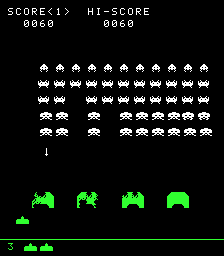
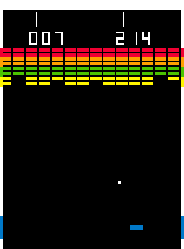
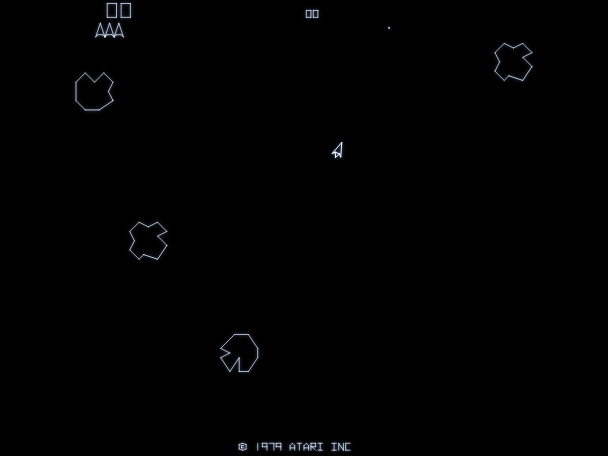
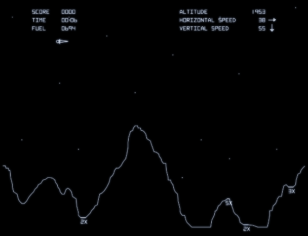

Giochi arcade degli anni '80 ricostruiti da zero in TypeScript, con Claude come compagno di sviluppo.
-

SPACE INVADERS- C
- moneta
- ← →
- muovi il cannone
- Spazio
- spara
- M V
- audio, mono/colori
Su smartphone e tablet: pulsanti del cabinato sotto lo schermo.
-

BREAKOUT- Mouse, dito
- muovi la racchetta
- Clic, tocco
- inizia, poi servi
- ← → Spazio
- la stessa cosa da tastiera
- M V
- audio, mono/colori
Il mouse e il dito fanno da manopola, come sul cabinato.
-

ASTEROIDS- ← →
- ruota la nave
- ↑
- spinta
- Spazio
- spara
- ↓
- iperspazio
- Invio
- nuova partita
- M
- audio
Su smartphone e tablet: ruota a sinistra; iperspazio, fuoco e spinta a destra; meglio in orizzontale. Su iPhone, per lo schermo intero: Condividi → Aggiungi alla schermata Home.
-

LUNAR LANDER- C
- moneta
- Tab Invio
- missione, start
- ← →
- ruota il modulo
- ↑ ↓
- leva della spinta
- Spazio
- abort
- M
- audio
Su smartphone e tablet: rotazione e ABORT a sinistra, leva della spinta a destra; meglio in orizzontale.
Codice e guide passo-passo: github.com/DarkHelmet67/insert-coin